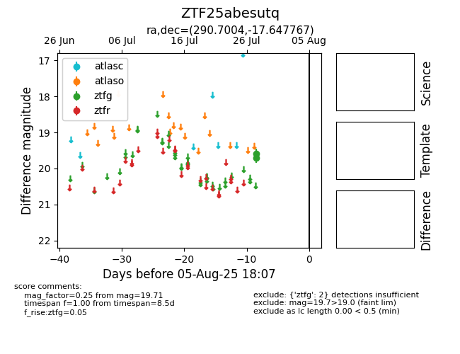

Target ZTF25abesutq at 2025-08-06 17:45, see:
FINK: fink-portal.org/ZTF25abesutq
Lasair: lasair-ztf.lsst.ac.uk/objects/ZTF25abesutq
ALeRCE: alerce.online/object/ZTF25abesutq
alt names
ZTF25abesutq (ztf,fink)
coordinates:
equatorial (ra, dec) = (290.7004,-17.64777)
galactic (l, b) = (20.3598,-14.71072)
photometry
last ztfg=19.71
2 ztfg detections
